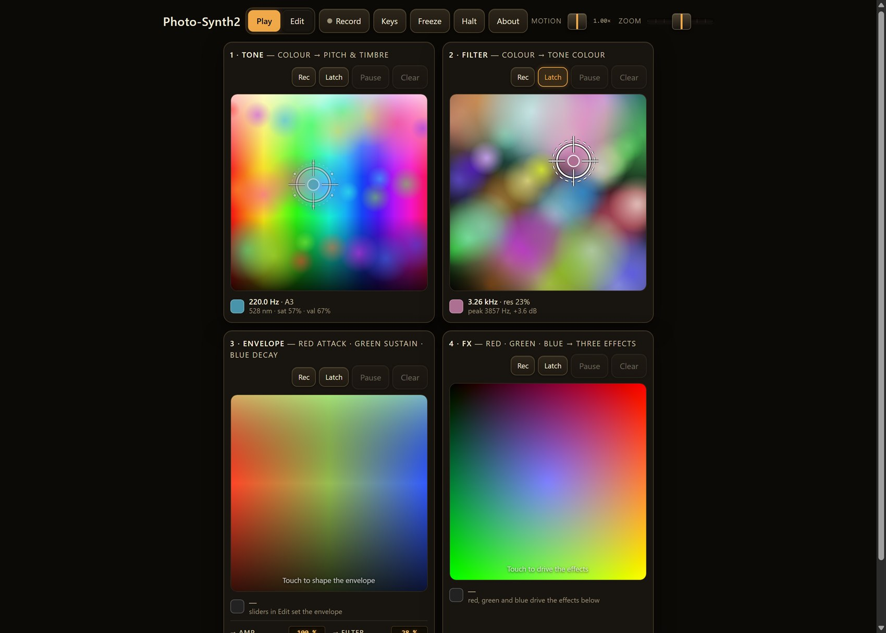
Photo Synth turns photographs into a playable synthesiser. You do not edit sound with numbers; you drag a finger — or a mouse — across a picture, and the colour under the cursor becomes the sound.
There are four photo pads, and each one listens to colour in a different way. The first is the oscillator: hue chooses the pitch, saturation morphs the waveform, brightness sets the loudness. The second is the filter. The third is the envelope. The fourth drives three effect parameters of your choosing. All four work at once, and each can be latched in place or set looping along a recorded gesture, so the instrument keeps moving on its own while you play something else.
Underneath the pictures is a complete virtual-analog voice — two band-limited oscillators that drift a few cents apart, a zero-delay-feedback ladder filter with a saturating core, a sixteen-voice pool, and a seven-module stereo effects rack you can reorder. All of it runs in native C++ inside your DAW, sample-accurate on host MIDI, and every control is automatable.
| Pad | What the colour under the cursor does |
|---|---|
| 1 · Tone | Hue → pitch (red is your base note, violet the top of the range). Saturation → waveform, from a pale sine to a full saw or pulse. Green → detune and vocal edge. Brightness → loudness. |
| 2 · Filter | Brightness → cut-off, from 80 Hz in the shadows to 14 kHz in the highlights. Saturation → resonance. Hue → a resonant peak swept from 180 Hz to 6 kHz. |
| 3 · Envelope | Red → attack (from a 1.5 s swell down to 2 ms). Green → sustain level. Blue → decay and release (30 ms up to a 4 s tail). |
| 4 · FX | The red, green and blue strengths each drive one effect parameter, chosen in the menus under the pad. Black is all three off, white is all three full. |
Above all that sits a shelf of Spectra — six characters that do not process the sound so much as re-decide how every voice is built: a drone engine, a liquid swirl, a bit-crushed industrial machine, a cathedral, a haunted tape and a swarm of insects. Arm any combination; each hands back exactly what it changed when you switch it off.
Photo Synth.vst3 folder into
C:\Program Files\Common Files\VST3\.A new instance opens on Dreamy Hoover — a stacked, gliding, pentatonic pad with a cursor already resting on the first photo. It waits in silence: the cursor is placed but not latched, so the patch is ready to play rather than already playing. Touch photo 1, or press a key, and there it is. Reach for Naked Oscillator in the Presets panel when you want the bare engine with nothing between the photo and your ears.
Load it, drag on the first photo, and you are playing. Everything below the first two steps is refinement.
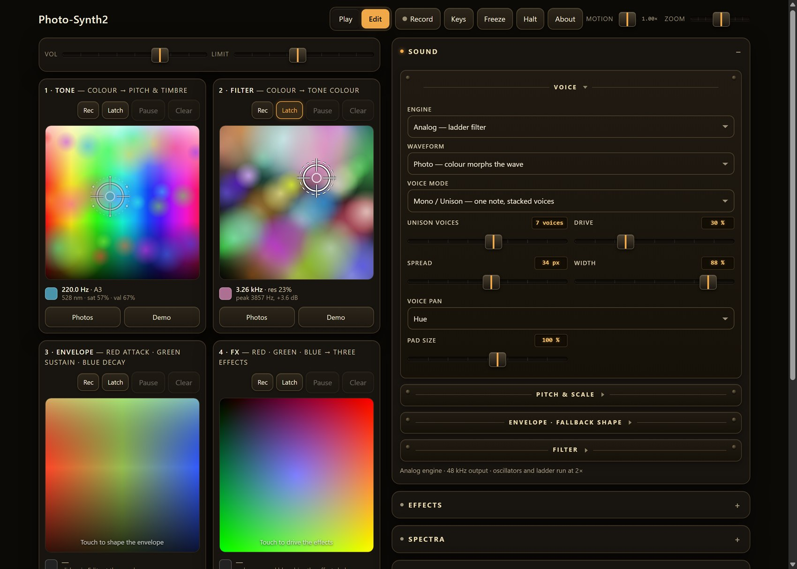
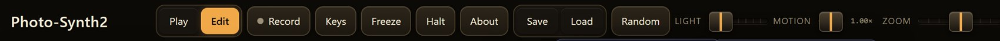
| Control | What it does |
|---|---|
| Play / Edit | Play shows only the four photos. Edit reveals the transport, the analysis strip and all panels. |
| Record | Captures the plugin's own output. Save WAV in the File panel writes it as 24-bit stereo. Maximum 180 seconds. |
| Keys | Shows or hides the on-screen keyboard docked at the bottom. |
| Freeze | Holds the delay tail forever: the loop's input closes, feedback goes to unity under a soft limiter, damping opens wide. Play over the frozen bed. |
| Halt | A tape stop. Pitch spins down to a halt; press again to spin back up. |
| Light | Lifts the whole console out of the dark — panels, pads, buttons and the page behind them — without touching the photographs, which keep their own contrast. Off by default; double-click the slider to return there. It is remembered for this installation, like Zoom, rather than saved with a patch. |
| Save | Writes the whole patch — controls, chain, cursors, paths and small copies of the photographs — to a file, through an ordinary Save dialog opened on your preset folder. It is in the title bar rather than in a panel so it is reachable in Play mode, when you are least likely to want to go hunting for it. |
| Load | Opens a menu of everything in the preset folder. Sub-folders fly out sideways as sub-menus and sit alongside the loose presets, so a library can be sorted by kind. Browse… at the foot of the menu reaches anywhere on disk; Preset folder… moves the library. |
| Random | Throws a new set of numbers at every sound control at once. It deliberately leaves the photographs, the cursor positions and the motion paths exactly where they are — so a patch you have choreographed keeps its choreography and only changes its voice. Volume, Limit and Motion are left alone too. |
| Motion | How fast every path and recorded gesture replays, from a quarter speed to four times — a master over the per-pad speeds in Automotion. It lives up here rather than in a panel because the panels are hidden in Play mode, which is exactly when a moving cursor matters. |
| Zoom | Scales the whole console uniformly, for large or small plugin windows. |
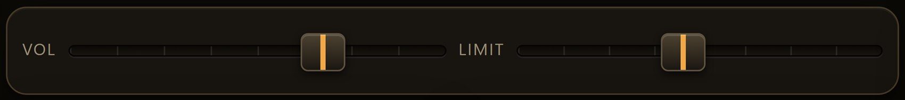
The limiter is deliberately plain: pure downward gain riding above a threshold, no makeup gain and no tone shaping, so it does not colour the sound. It is there because a resonant ladder filter with the envelope sweeping it can produce sudden peaks. At the default 40 % it catches those without ever touching ordinary playing. Turn it up if you are pushing resonance and drive hard; turn it to zero if you would rather do all the limiting yourself downstream.
Every pad carries the same controls — Rec, Latch, Pause and Clear along the top, Photos and Demo underneath — and differs only in what it does with the colour it samples.
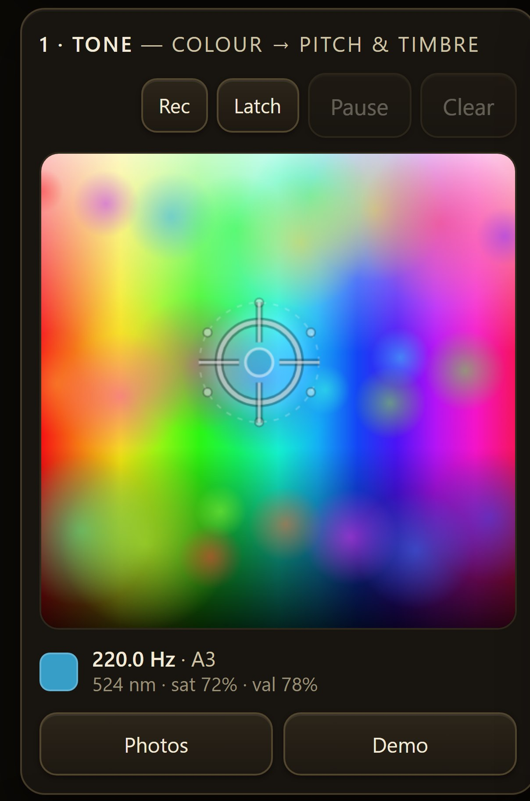
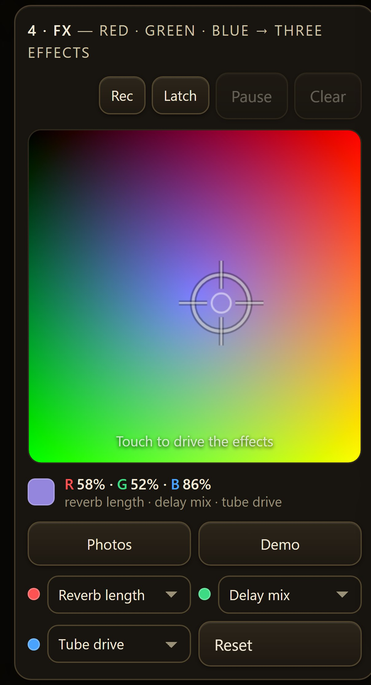
| Control | What it does |
|---|---|
| Photos | Loads an image from disk (JPEG, PNG, and anything else Windows can decode). The photo is stored inside the plugin, so it travels with your project and your presets. |
| Demo | Loads the pad's generated demo image — a hue sweep for Tone, soft colour blobs for Filter, a red-to-blue ramp for Envelope, and an RGB field for FX. |
| Latch | Leaves the cursor where you lifted it. On Tone the note keeps sounding; on the other pads the setting is held. Tap the pad again to move it, or switch Latch off to release. |
| Rec | Arms motion recording for that pad alone — see below. |
| Pause | Holds a replaying gesture exactly where it stands, without touching the recording. Release it and the loop carries on from that point rather than jumping — it is credited the time it stood still. Greyed out until the pad has a motion. |
| Clear | Throws the recorded gesture away. The cursor stays where it was. |
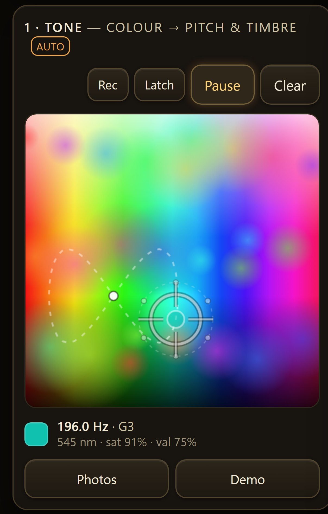
Press Rec on the pad you want to automate, then draw. Release, and the gesture starts looping immediately — the cursor retraces your path, sampling colour as it goes, at the speed set by Motion in the top bar. Every new note re-phases all running motions, so a phrase lands the same way each time. Dragging an automated cursor takes manual control without erasing the loop; a single tap starts it again.
Pause stops the cursor where it stands and leaves everything else alone: the path is still armed, still drawn, and releasing the button picks the loop up where it left off instead of snapping to a new phase. It is the difference between freezing a texture for a bar and losing the gesture you spent a minute getting right. Clear is the one that discards it.
Recording a gesture is the free-hand way. The other way needs no arming at all: hold a modifier and drag straight across the photograph.
| Shift + drag | Lays down a line from where you pressed to where you let go. The cursor walks up and down it. |
| Ctrl + drag | Lays down a circle centred on the point you pressed, with the drag setting the radius. A small cross marks the centre while you draw. |
Drawing a path makes no sound — you are describing a shape, not performing one — and the moment you release, the path arms and starts walking. The panel opens on the pad you drew, everything else folds away, and the row for that pad flashes.
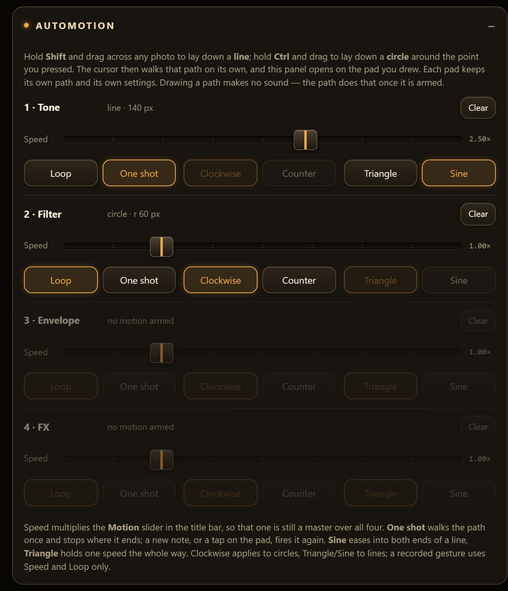
| Control | What it does |
|---|---|
| Speed | 0.1× to 4× for this pad alone, multiplied by Motion in the title bar. Safe to move while the path is running: the replay carries an accumulated phase rather than a start time, so the cursor never jumps to catch up with a new formula. |
| Loop / One shot | Loop walks the path for ever. One shot walks it once and stops where it ends, leaving the cursor — and the colour under it — exactly there. The path stays armed: the next note, or a tap on the pad, fires it again. That turns a one-shot line into a sweep you play rather than a loop you fight. |
| Clockwise / Counter | Which way a circle turns. Switching it reverses the cursor in place rather than restarting the circle. |
| Triangle / Sine | How a line travels between its ends. Triangle holds one speed the whole way and turns sharply at each end. Sine eases into both ends and is quickest through the middle — the difference between a scan and a breath. |
| Clear | Discards the path for that pad. The same button sits on the pad itself. |
Every pad keeps its own path and its own four settings, and all of it travels in the preset and in the DAW project along with everything else.
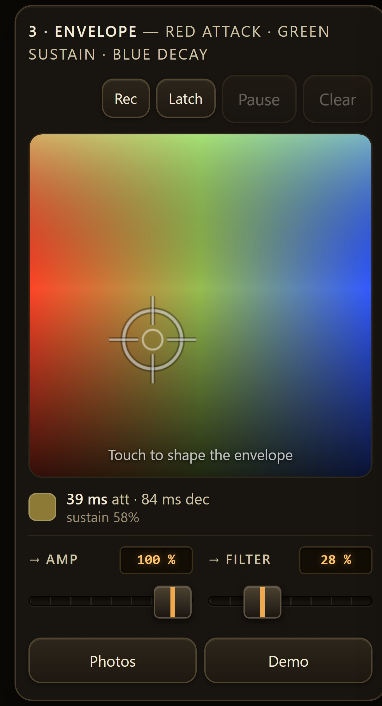
→ Amp and → Filter appear under this photo, because this is where the envelope is made — and unlike the panels they stay reachable in Play mode. The same pair also appears in Sound → Envelope beside the fallback shape; they are two faces of one control, so whichever you move, the other follows. → Amp is how much of the shape goes to loudness: below 100 % the level blends toward a plain click-free gate, organ-like, so the envelope can be spent on the filter instead. → Filter sweeps the cut-off with the envelope, up to five octaves at full — closed when the envelope is down, landing exactly on your filter setting at its peak. Both apply to whichever envelope is in force, the photo's or the sliders'.
This is the pad that changes how the instrument feels rather than how it sounds. A red corner gives you a percussive pluck; a deep blue gives a long ringing tail; a bright green area holds notes up indefinitely. Because it is a photo like any other, you can latch a spot or loop a gesture across it and let the articulation drift while you play.
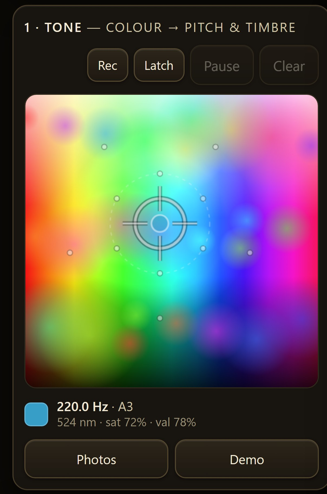
Stack more than one voice and they stop reading a single pixel. Voice one plays the colour directly under the cursor; the others sample a ring around it at the Spread radius, so the local texture of the photograph becomes a chord. Past seven voices a second, wider ring appears at 1.9× the radius. In Polyphonic mode it is each note's oscillators that spread, at 1.0, 1.3 and 1.6× instead.
The tone pad shows you this directly: a soft brightening out to the widest radius in play, a dashed hairline at the Spread radius itself, and a dot on every point that is actually being sampled. Move the Spread slider — now up to 60 px — and you can see the patch of picture the chord is being drawn from. It is the surest way to understand why one part of a photo sounds rich and another sounds flat.
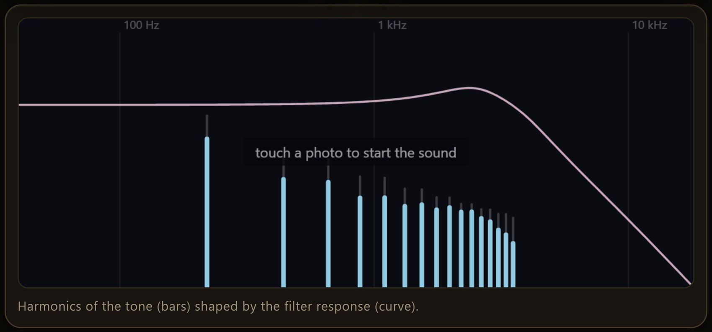
Four engraved units: the voice itself, how colour maps to pitch, the fallback envelope, and the filter. Each one folds away — click a nameplate to close it, and click the folded strip anywhere to open it again — so you can keep only the section you are working on in view.
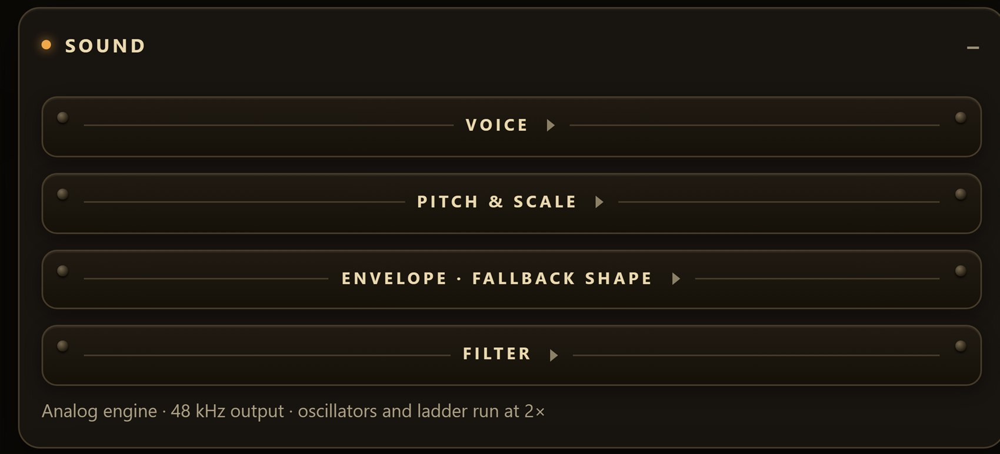
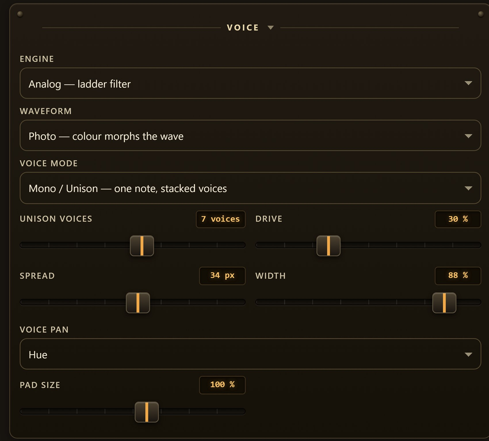
| Control | What it does |
|---|---|
| Engine | Analog is the virtual-analog voice: two band-limited oscillators through a Moog-style ladder filter, running at twice the output rate. Additive is ten pure sine partials and a clean biquad — glassier, simpler. |
| Waveform | Photo lets the picture morph the wave from sine through triangle to saw or pulse, as saturation rises. The other four — Sine, Triangle, Sawtooth, Square — pin both oscillators to that shape, band-limited and alias-free, and the photo then only affects pitch, loudness and detune. |
| Voice mode | Mono / Unison plays one note with stacked voices. Polyphonic plays up to four notes at once. |
| Unison voices | 1–12. Extra voices sample the colours in rings around your cursor, so the local texture of the photo becomes a chord riding on one note. Uniform areas thicken into unison; detailed areas scatter into intervals. |
| Notes / Osc per note | Polyphonic mode only: how many simultaneous notes (1–4) and how many photo-sampling oscillators each note carries (1–4). Oldest note is stolen when you exceed the count. |
| Drive | How hard the ladder's saturating core is pushed. Thickens rather than distorts — the level is compensated. |
| Spread | The radius, in pixels, of the ring the extra voices sample from. Small values give a tight unison, large values a wide scatter. |
| Width | Stereo width. At zero the two channels are identical for true mono compatibility. |
| Voice pan | Whether voices are panned by the hue they sampled or by their horizontal cursor position. |
| Pad size | The proportions of all four photo pads, 60–130 %. Taller pads give a gesture more room; shorter ones leave more of the window for the panels. This is not the same as Zoom, which scales the whole console including the pads. |
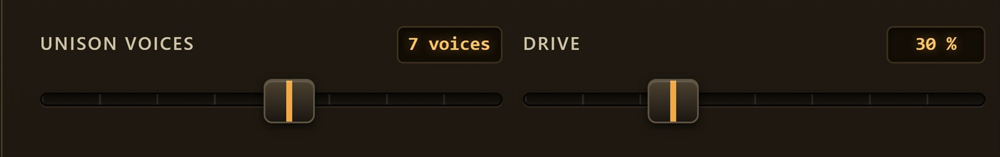
| Control | What it does |
|---|---|
| Colour → pitch | Spectral reads hue as a wavelength and follows photon energy, so the intervals feel physical. Hue angle is a plain linear sweep around the colour wheel. |
| Scale | Continuous, Chromatic, Major, Minor pentatonic, Major pentatonic or Whole tone. Anything but Continuous snaps the colour's interval onto the scale, which makes the pads far easier to play in tune. |
| Base note | The note a pure red pixel plays. Also set by the keyboard, by your computer keys, and by incoming MIDI. |
| Range | How many octaves the full colour sweep covers, 1 to 4. |
| Glide | How long the pitch takes to slide when the colour changes. A little glide makes dragging sound like an instrument; none makes it sound like a scanner. |
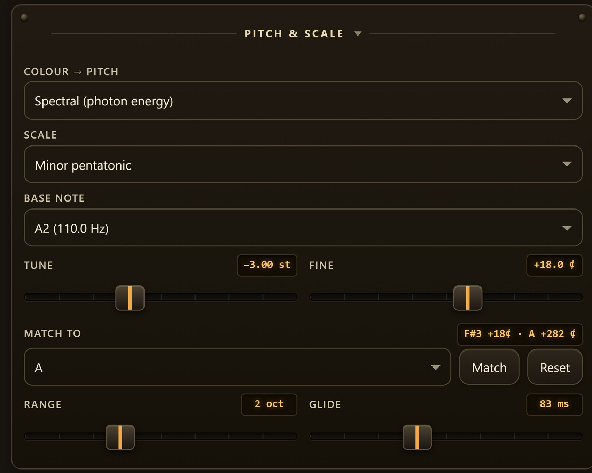
Tune slides continuously over ±12 semitones — no steps of its own, so it can sit between notes — and Fine adds ±100 cents on top. Both offset every note the instrument plays: the base note, the keyboard, DAW MIDI and an imported MIDI file. They move the base frequency only, so a held note glides to the new pitch rather than retriggering, and you can tune into something while it sounds.
The Match to row is a tuner. Its readout is live — the note sounding right now, and how far away the note you picked is, in cents. Match then moves Tune and Fine so the sounding note becomes that one, always by the shortest distance: a G matched to A goes up two semitones, never down ten, and never by whole octaves. It reads the frequency the instrument is actually synthesising rather than analysing the output, so it stays exact even while a recorded motion sweeps the pitch around — it catches the note as of the moment you press it. Because the colour under the cursor sets the interval, moving the cursor afterwards moves the pitch again: Match tunes the instrument, it does not pin one note. Reset returns both sliders to concert pitch.
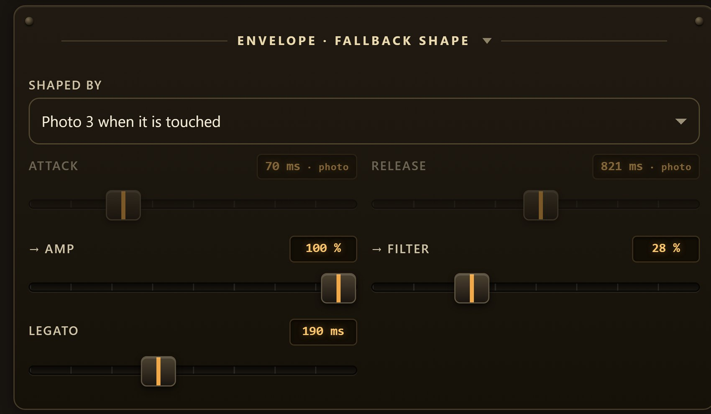
Photo 3 takes the envelope over the moment you touch it, and from then on these two sliders are the fallback. Shaped by decides which is in charge: Photo 3 when it is touched is the normal behaviour, and These sliders only hands control back without having to clear the photo. While the photo is in charge the two sliders grey out and go inert, so you can see at a glance why they are doing nothing.
| Control | What it does |
|---|---|
| Shaped by | Photo 3 when touched, or these sliders only. |
| Attack / Release | The basic shape, used whenever photo 3 is not in charge. Without the photo the decay is fixed at 250 ms and the sustain is full, so this is a plain attack-and-release envelope. |
| → Amp / → Filter | The same routing that sits under photo 3, repeated here beside the shape. Move either copy and the other follows. |
| Legato | How long the note is held after you lift off photo 1, up to half a second, so tapping from colour to colour glides instead of retriggering every note. |
Looking for Dark drone? It has moved, with five new companions, into the Spectra panel — see section 05.
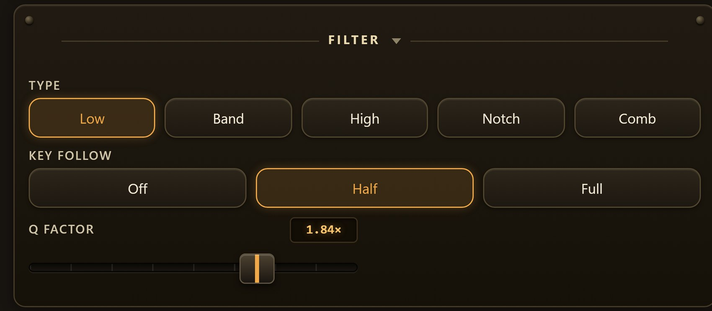
| Type | Character |
|---|---|
| Low | The classic 24 dB ladder low-pass. Dark patches of photo 2 mute the tone. |
| Band | Keeps a band around the cut-off and discards the rest — thin, vocal, focused. |
| High | Removes everything below the cut-off. Bright patches become airy and thin. |
| Notch | The inverse of band-pass: sweeps a hollow through the sound instead of a peak. |
| Comb | A tuned feedback delay whose resonances sit at every multiple of the cut-off. With high resonance it rings like a struck string — superb for metallic drones. |
By default the cut-off comes from photo 2 alone, so a bass note and a high one are filtered identically — which makes the low notes sound dull and the high ones thin. Key follow ties the cut-off to the keyboard instead: Full moves it an octave for every octave you play, Half moves it half as far, and Off is the old behaviour. It follows the lowest note sounding — the bass of a chord rather than whichever key you pressed last — and it measures from C3, so a patch dialled in around there is unchanged and everything above it opens up. Notes from the on-screen keys, your DAW and the poly slots all count.
The photo sets the resonance — saturation in photo 2 pushes it up — and Q factor scales what it asks for, from 0.05× to 4×, with the centre position leaving the original behaviour exactly as it was. It reaches every mode: the ladder's resonance in Low, Band, High and Notch, the comb's internal feedback, and the biquad Q of the additive engine. Turn it up for singing band-passes and a comb that rings like a string; turn it right down and the resonance all but disappears, which is the setting for a photograph that is making the filter shout, or for a clean sweep with no peak at the corner at all.
On the notch, more resonance deepens and widens the hollow rather than narrowing it — that is the nature of the ladder-derived notch, and the drawn curve in the analysis strip shows you exactly what the filter is doing.
A Spectrum is a character rather than an effect. It does not sit in the signal path waiting for audio; it changes how every voice is built in the first place — which is why each one wears its own enclosure instead of a shared faceplate, and why none of them costs anything at all while its switch is off.
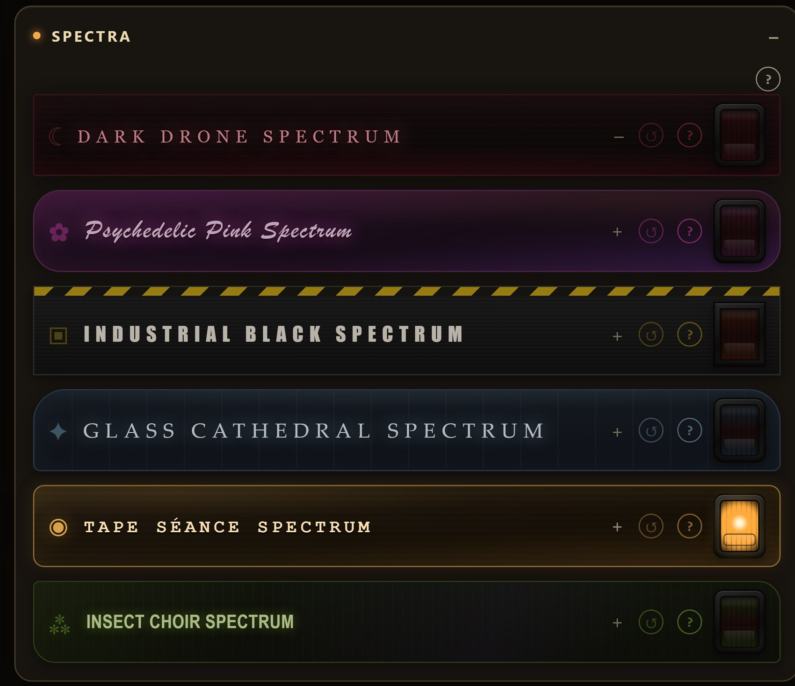
The illuminated rocker arms a character. You may arm any combination: they stack, and where two of them reach for the same control the most recently armed one wins. Switching one off unwinds the stack to that point and re-applies whatever was armed after it, so every release hands back exactly what that character changed and nothing else. Your own chain order, power switches and slider positions survive untouched.
The (?) beside each switch unfolds a description of what that character actually does, and opens the controls if they are collapsed. The panel has one of its own, at the top right, for what a Spectrum is in the first place. Plates stay tight until you ask.
A character takes over a handful of the instrument's controls while it is armed, and hands them back when you release it. But if you move one of them in the meantime, it stops being the character's: your value stays where you put it, releasing leaves it alone, and the character will not write over it again. Without that rule an edit made while a character was armed would quietly disappear on release, and the patch would sound different the next time you armed it.
The ↺ beside the (?) undoes your meddling with that one character: its own knobs go back to the positions they arrive with, and it takes back any of its controls you have borrowed. What the patch looked like before you armed it is still remembered, so releasing afterwards still puts that back. Nothing else on the instrument is touched.
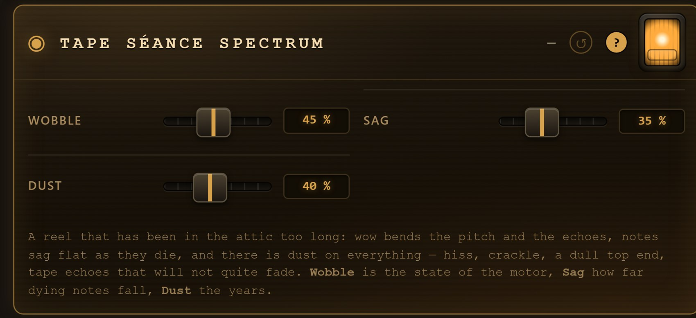
Four of the six switch on effects of their own, and they arrive in whatever order your rack is already in — a character never rearranges your chain. If you want Industrial Black's crush heard by the reverb, put the reverb after the crusher yourself, once, and every character will respect it. Dark Drone and Insect Choir add no effects at all; they work entirely on the voices.
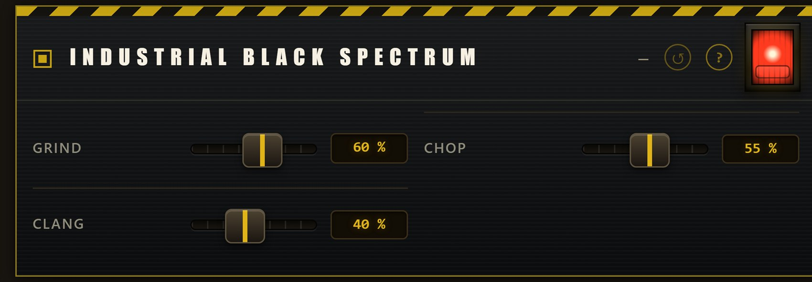
| Character | What it does to the instrument |
|---|---|
| Dark Drone | A sub-oscillator under every voice through the same filter, an irregular microtonal cluster instead of tidy unison, an ultra-slow random walk leaning on cut-off, detune and delay time, and notes that sag toward an octave down as they decay. Sub level, Sub octave, Cluster, Env → Pitch, Drift, Drift time. |
| Psychedelic Pink | Everything smeared and slowly rotating: the stereo image swirls, a slow wave bends the tuning, the filter breathes on its own, and the reverb becomes the reverse character so tails swell in rather than die away. Swirl, Smear, Bloom. |
| Industrial Black | A square wave into the crusher before the filter, so the ladder has to smooth the wreckage; a comb resonance and a tight metal slapback, a stutter on the gate, and notes that stop dead instead of releasing. Grind, Chop, Clang. |
| Glass Cathedral | Your own tone sent to church: notes open a little more slowly and take their time to leave, the envelope is sent into the filter so every note dawns, and a long hall stands behind it. It is deliberately restrained — the oscillator stays in front, and only the effects that would muddy a long tail step aside. Air, Halo, Shine. |
| Tape Séance | A reel that has been in the attic too long: wow and flutter bend the pitch and the echoes together, notes sag flat as they die, and there is dust on everything — hiss, crackle, a dull top end. Wobble, Sag, Dust. |
| Insect Choir | The voices stop agreeing: they detune into a cluster instead of a chord, each one trembles at its own rate, and small random jumps keep the swarm moving. Arming it raises the voice count. Swarm, Flutter, Skitter. |
They leave your tuning alone. A character may spread the voices into a cluster, wow the pitch or drop a sub-octave underneath — those are the instruments. But the note you played stays the note you played: voice one sits exactly on it and the cluster grows around it, and no character rewrites Spread, which would re-pitch the whole stack by moving where on the photograph the extra voices read.
Seven stereo modules in a real serial chain. The order shown is the signal path: drag the ⋮⋮ handle, or use the arrows, and the audio graph is rewired under a short master dip so it never pops.
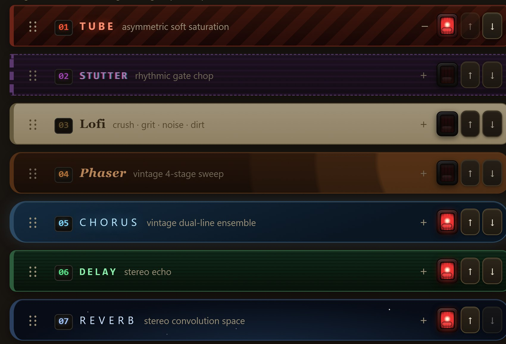
Drive 0–24 dB, Tone. A biased triode-style curve adds gentle even harmonics; four-times oversampled with DC blocking. Loudness-compensated, so driving it thickens the sound without getting louder.
Mix, Time 40–900 ms, Feedback up to 112 %, Offset L↔R ±250 ms, Character. Past unity the loop self-oscillates into a soft limiter instead of blowing up.
Mix, Character, Length 0.2–6 s. Room, Hall, Plate, Spring (a chain of dispersive chirps — the classic boing) and Reverse, whose impulse swells in so notes arrive with a drawn-in breath.
Mix, Rate, Depth. Four swept all-pass stages with a little feedback: the slow hollow swoosh of a seventies stomp box.
Mix, Rate, Depth. Two delay lines modulated in opposite phase, wet path rolled off dark like an old bucket-brigade unit.
Amount, Rate 1–16 Hz. A smoothed gate, so the chopping never clicks. Put it before delay and reverb and the tails survive the cuts.
Crush (sample-rate reduction and bit grit), Noise (hiss plus sparse crackle), Dirt (soft normalised saturation). Everything is smoothed per sample, so the FX photo can drive it without clicks.
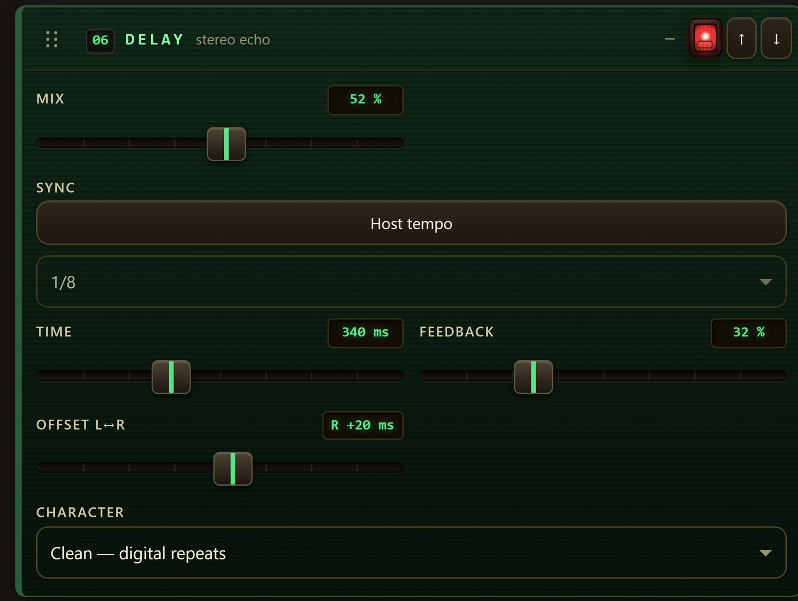
Clean gives digital repeats. Tape runs the feedback loop through gentle saturation, darker damping, a low cut and a slow wow, so every repeat gets softer, dirtier and slightly unstable — a worn analog echo. Combined with Freeze in the top bar, tape mode degenerates into a beautiful saturating murk you can play over.
Every Brokild synth carries the same rack. Not a copy of it and not a similar one: the identical set of effects and characters, compiled into each instrument and saved inside each patch. Learn it here and you have learned it in all of them.
The globe on the panel opens it. What appears is two racks side by side — effects on the left, characters on the right — and they do very different things. An effect processes what the synth has already made. A character reaches back into the instrument and changes how it makes it.
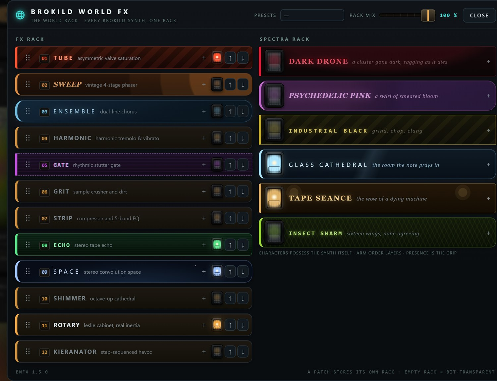
Nothing is on when you start, and an empty rack is not a bypass — it is an absence. The audio never enters it. A patch you made before the rack existed sounds exactly as it did, to the sample, and the plugin's own test bench checks that on every build.
Twelve, in the order they run: TUBE (asymmetric valve saturation, and its DRIVE holds its level as you turn it up, so the pedal gets dirtier rather than louder), SWEEP (four-stage phaser), ENSEMBLE (dual-line chorus), HARMONIC (the brownface split-band tremolo, plus plain tremolo and true vibrato), GATE (rhythmic stutter), GRIT (crusher and dirt), STRIP (compressor and five-band EQ), ECHO (stereo tape echo up to five seconds), SPACE (true convolution reverb), SHIMMER (a feedback network with the octave folded back into the loop), ROTARY (a Leslie with real inertia — the horn takes about a second to change its mind, the drum about four) and KIERANATOR (the step glitcher). ECHO, GATE and HARMONIC lock to the host clock.
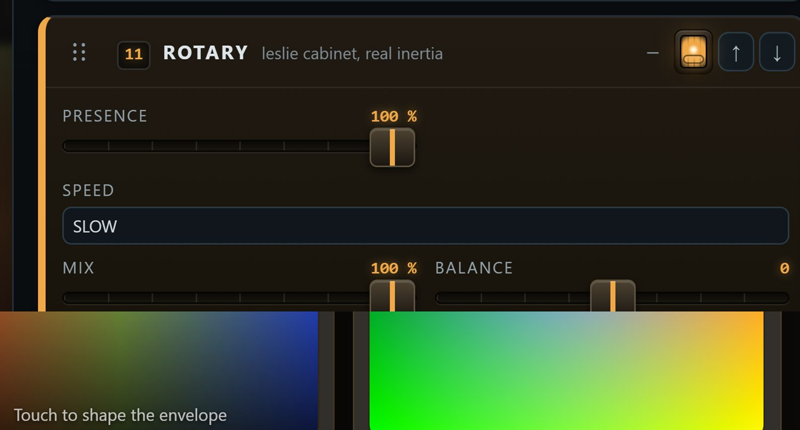
Drag a pedal by its grip to reorder the chain, or use the arrows. Reordering while sound is playing is safe: the rack dips through the change and comes back on the other side.
The right-hand rack is SPECTRA, and it does not process the sound — it possesses the instrument. A character reaches into the voices themselves: how far they drift out of tune with each other, how wide they sit, whether they breathe, whether they sag flat as they die, how dark the filter runs. Two synths under the same character do not sound alike. They sound like themselves, haunted the same way.
DARK DRONE is a cluster gone dark, with a drift that takes minutes to come round. PSYCHEDELIC PINK breathes the width, tuning and filter over a wash of phaser, chorus and reverse reverb it carries itself. INDUSTRIAL BLACK is grind, chop and clang. GLASS CATHEDRAL is a hall of its own and a breath on the tuning. TAPE SEANCE is the wow of a dying machine. INSECT SWARM is sixteen wings, none of them agreeing.
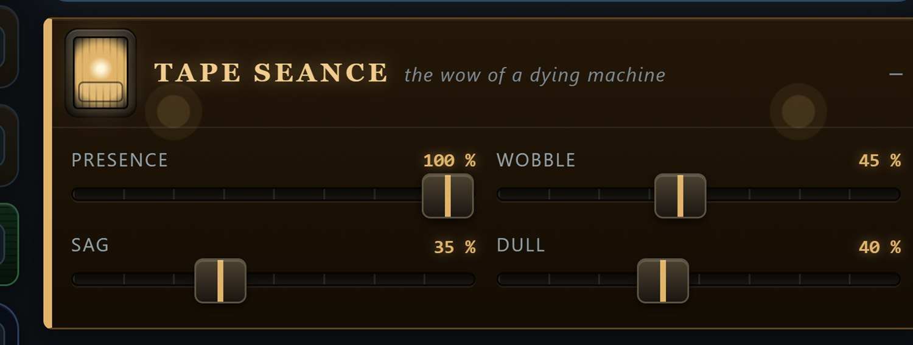
Characters stack: arm two and both take hold, in the order you armed them. Their pitch sag is keyed to each note's gate rather than its volume, so a held note stays in tune and only sinks as it dies. In Photo Synth the characters reach the whole sixteen-voice pool: the detuning fans across the voices a photograph is already spreading, and the sag follows each note's gate, so a held chord stays in tune.
KIERANATOR keeps the last ten seconds of everything the synth has played, and every one of its effects is a different way of reading that buffer back. Paint a bar of sixteen steps with the brushes — RETRIG, TAPE STOP, REVERSE, SHUFFLE, PITCH, CRUSH, GATE — and it plays the pattern against the host's bars. The same brush again clears a step. With no host transport it free-runs on its own clock. It is named for the late Kieran Foster, whose Glitch made this kind of thing worth doing.
The rack belongs to the patch. Save a patch and its rack goes with it; load one from before the rack existed and it comes back rack-empty, which is exactly the sound it promised. The PRESETS menu in the header holds ten made-up racks to start from. And because the rack is shared code, every Brokild synth gets new modules and fixes on its next build — the effects are the same effects, wherever you opened them.
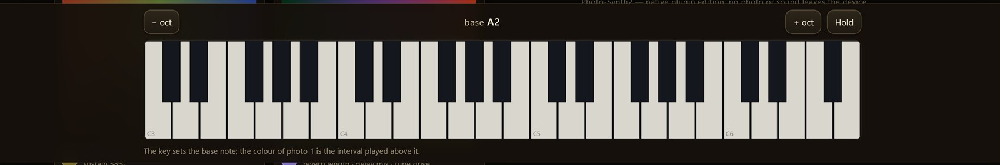
Use − oct and + oct to move the range, and Hold to keep the last key
down. On a computer keyboard the rows z s x d c v g b h n j m and
q 2 w 3 e r 5 t 6 y 7 u play two octaves from the leftmost key. In Polyphonic
voice mode, several keys — or several MIDI notes — sound together as a real chord.
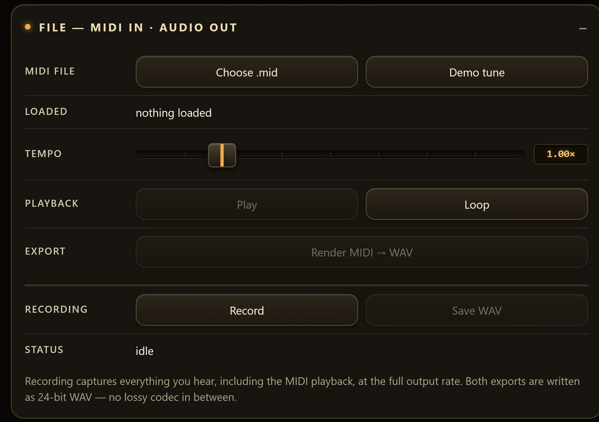
Choose .mid imports a standard MIDI file, or Demo tune loads a short pentatonic phrase to try the path. Its melody drives the base note while the photos keep shaping the sound; the tempo comes from the file and Tempo scales it from a quarter speed to four times. In Mono/Unison mode overlapping notes are reduced to the highest one; in Polyphonic mode the file's chords play for real, up to your Notes setting.
| Action | What happens |
|---|---|
| Record | Captures the plugin's output — playing, MIDI, filter sweeps and all — up to 180 seconds. |
| Save WAV | Writes the capture as 24-bit stereo WAV at the session's sample rate, through a normal Windows save dialog. |
| Render MIDI → WAV | Renders the loaded MIDI file offline, faster than real time and sample-accurate, at 48 kHz — using the colours currently under the cursors. |
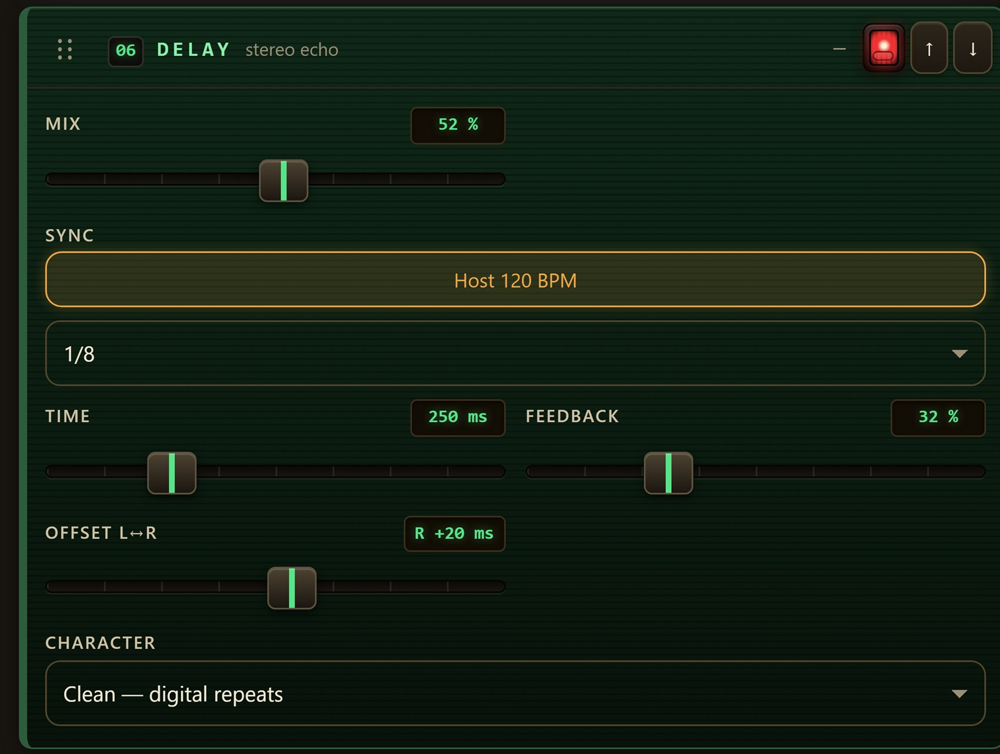
Delay and Stutter can lock to the DAW. Press Sync, choose a division — 1/1 down to 1/32, dotted and triplet — and the module's own Time or Rate control is driven from the tempo the host reports, following it when you change it. The control is held while synced so a drag cannot fight it, and the switch reads back the current tempo.
Because the page follows the tempo, a tempo change while the plugin window is closed is not tracked; the last synced value is held until you open it again.
Two patches are built in. Dreamy Hoover is what a new instance greets you with: seven voices stacked and gliding, pentatonic so every position on the photograph is musical, chorus and a long hall behind it, and a cursor already resting on the first photo. Naked Oscillator is the opposite — one voice, no effects, nothing between the picture and your ears — and it is the honest place to start building a sound of your own. Neither carries photographs, so both dress whatever pictures are loaded.
Dreamy Hoover places its cursor but does not latch it, so a new instance is silent until you touch it. Once you have a patch you would rather be greeted by, Set as default freezes it — controls, chain, armed characters, cursors, motions and small copies of the photographs — and new instances open on that instead. Clear default returns to Dreamy Hoover. A patch saved inside a DAW project always wins over both.
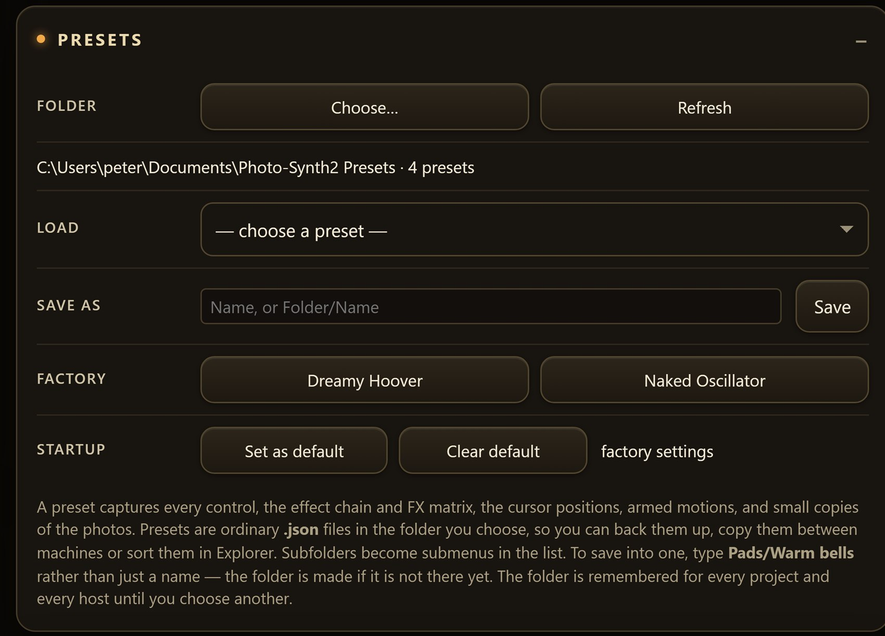
A preset captures every control, the effect chain and its power switches, the FX matrix
assignments, the cursor positions, the armed motions, and small copies of all four photos. It is
written as an ordinary .json file into a folder of your choosing, so a preset library
is something you can back up, copy to another machine, or sort in Explorer like any other work.
| Control | What it does |
|---|---|
| Choose… | Picks the preset folder. It is remembered in the plugin's own settings — not in the session — so the same library is there in every project, every host, and after a restart. Until you pick one, the plugin uses Documents\Brokild patches\Photo Synth, creating it on first use. Every Brokild plugin keeps its own folder under that same roof. Earlier versions kept presets beside the installed .vst3, which an installer can reach and replace — anything saved that way is copied across the first time this version runs, and the originals are left where they were. |
| Refresh | Re-reads the folder, for when you have added or removed files behind the plugin's back. |
| Load | Every preset in the folder, in one menu. Subfolders become submenus, so a library can be sorted by kind — Pads, Leads, Textures. Choosing one loads it. |
| Save as | Type a name and press Save. Type Pads/Warm bells instead and it is filed in that subfolder, which is created if it does not exist yet. |
Your DAW project stores the same thing independently, so reopening a session restores the sound and the pictures without touching the preset folder at all. The folder is for the sounds you want to reach for again; the project looks after itself.
Nine short experiments, roughly in order of adventurousness. Each one is a handful of moves — the point is to hear what the instrument does, not to build a patch.
Drag slowly across photo 1 in a wide arc, then leave the cursor on a bright saturated area of photo 2. Now drag on photo 1 again.
Everything else in this manual is a variation on this.
Sound → Pitch & scale: set Scale to Minor pentatonic and Range to 2 oct. Add a little Glide.
Suddenly the photo is an instrument rather than a colour meter — every colour lands on a usable note.
Voice mode Mono / Unison, Unison voices to 8, Spread to about 30 px. Put the cursor on a busy, detailed part of photo 1 — then on a smooth gradient.
Detail scatters the eight voices into a chord; smooth areas collapse them into a thick unison. The texture of the picture becomes harmony.
Voice mode Polyphonic, Notes 4, Osc / note 2. Record a slow four-note chord progression on the track and let it play while you move the cursor on photo 1.
The chord holds while the timbre of every note travels with your cursor.
Press Rec on photo 2 and draw a slow circle over a colourful area, ending where you began — the white dot marks the start — then release. Set Motion in the top bar to about 0.5×.
A slow endless filter sweep that follows the picture rather than an LFO — hold a note and listen to it breathe.
Latch a deep red spot on photo 3 (fast attack, short tail), set Envelope → Filter to about 60 %, filter type Low, and play staccato notes on the keyboard.
Plucks and blips, with the filter snapping shut behind each note.
Filter type Comb. Latch photo 1 on a saturated colour and photo 2 on something bright. Engage Dark Drone, Sub level up, Cluster around 30 ¢, Drift 60 %, Drift time long. Leave it running for a few minutes.
A struck-string resonance that never quite repeats itself and slowly comes apart. This is what the instrument is best at.
Delay Character to Tape, Feedback around 90 %, Mix up. Play a phrase, then hit Freeze in the top bar and keep playing.
The phrase is held forever as a saturating tape bed while you improvise on top. Press Freeze again to let it decay.
Assign the FX pad's three menus to Lofi crush, Chorus mix and Reverb mix, switch those three modules on, then press Rec on photo 4 and draw a long wandering gesture.
The effects morph continuously along a path you drew, in combinations no three LFOs would find. Finish with Halt.
Around forty controls are exposed to the host as automatable parameters, named exactly as
they are labelled in the panels — vol, limiter, drive,
attack, release, envAmp, envFlt,
satGain, delayMix, delayTime, delayFeedback,
reverbMix, reverbLength, the phaser, chorus, stutter and lofi
controls, and the Dark Drone set. Write automation for them as you would for any synth.
Added since version 1.0, and automatable like the rest: tune and
fine (global tuning), filterQ (the resonance scaler, now reaching
0.05×), and spread now reaching 60 px. The Spectra characters, the tempo-sync
switches, Key follow and the tuner's Match button are panel controls rather than
parameters — they move the automatable sliders on your behalf, or are stored with the patch, so
what they do is recorded in the project and visible on the panels.
Saving your session stores every control, the effect order and power switches, the FX matrix, the cursor positions, the armed motions and compressed copies of all four photographs. Reopening the session restores the instrument exactly, pictures included, with no external files to keep track of.
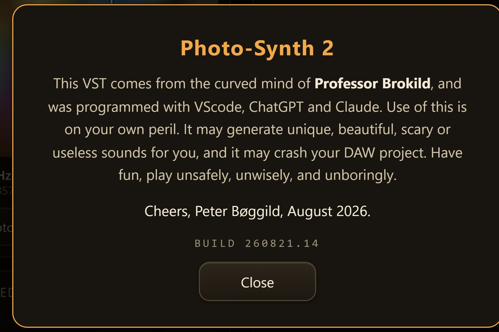
Photo Synth · Brokild Apps · August 2026. Native VST3 and standalone port of the browser instrument Photo Synth. The interface is the original page; the audio engine — voice pool, ladder filter, effects rack, recorder and offline render — is native C++.
This VST comes from the curved mind of Professor Brokild, and was programmed with VScode, ChatGPT and Claude. Use of this is on your own peril. It may generate unique, beautiful, scary or useless sounds for you, and it may crash your DAW project. Have fun, play unsafely, unwisely, and unboringly.
Cheers, Peter Bøggild, August 2026.